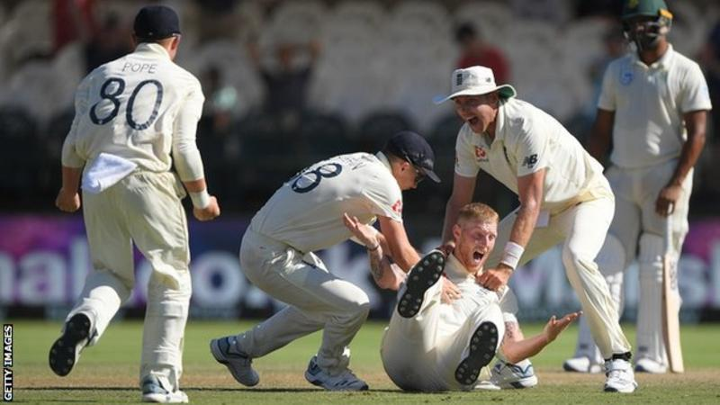
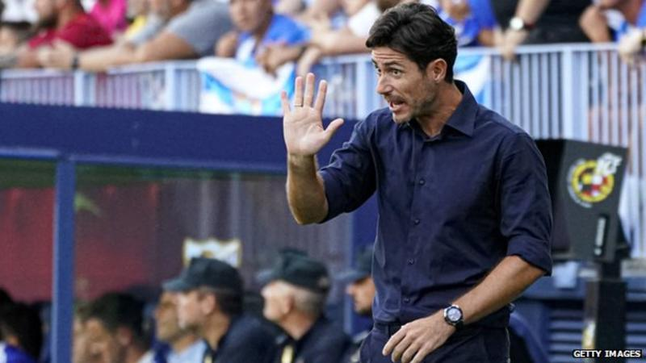

England in South Africa: Ben Stokes stars in thrilling 189-run win

With the tourists still needing three wickets in the final hour, man of the match Ben Stokes claimed them all to cap a stunning all-round performance. He removed Dwaine Pretorius and Anrich Nortje in consecutive balls before dismissing Vernon Philander to secure the win with just 8.2 overs remaining. The Proteas looked to be grinding their way to a draw, with opener Pieter Malan making a superb 84 off 288 balls on debut, before Rassie van der Dussen and Quinton de Kock resisted for almost 34 overs. England's attack was also limited with all-time highest Test wicket-taker James Anderson missing most of the last two sessions because of injury. But De Kock slapped a long hop from Joe Denly to mid-wicket to fall for 50 and Van der Dussen, who spent 140 balls over his 17, flicked Stuart Broad to leg gully. England's chance of victory was boosted but they still needed Stokes to seize it, the all-rounder finding seam movement and bounce in a devastating spell to secure the tourists' first win at Newlands since 1957.
Malaga suspend coach Victor Sanchez over explicit video

The second-tier side said an investigation had been launched. Writing on Twitter, Sanchez said he had been blackmailed over the video prior to it being published. "I am being subjected to a crime against my privacy with harassment and extortion," he said. "The matter is in the hands of the police and I entrust myself to follow their instructions. "Sharing or disseminating an intimate content of any person without consent is also a crime either through social networks or messages or in any other way. Thank you for your understanding and support." Malaga are currently 16th in the Spanish Segunda Division. "In relation to the events that have recently been discovered, and which have not as yet been verified, Malaga CF immediately suspends coach Víctor Sanchez del Amo from his duties until a full investigation is carried out," the club said in a statement. "We will disclose further information once the facts have been clarified."